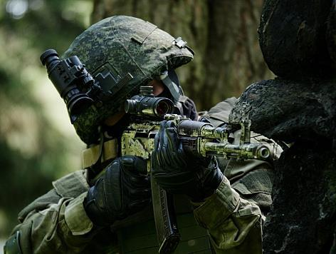
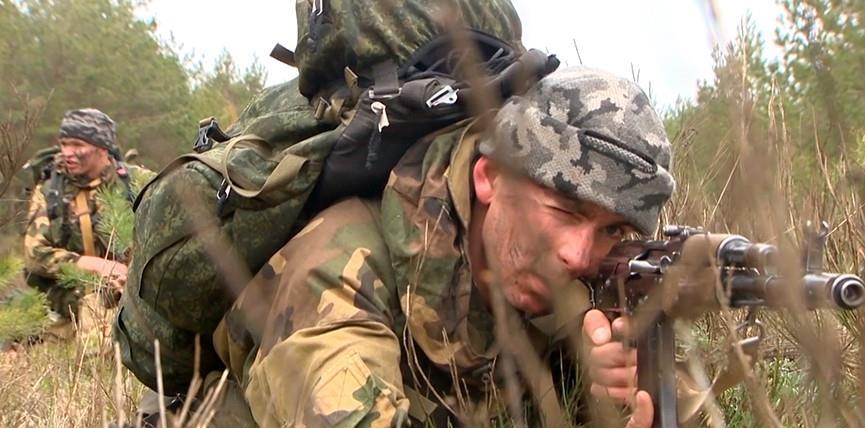
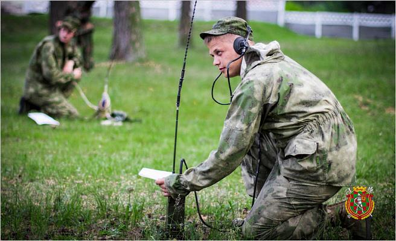
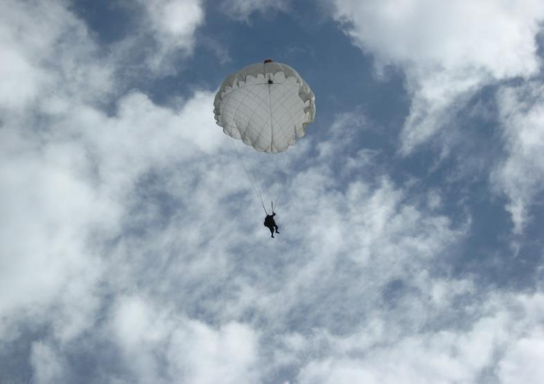
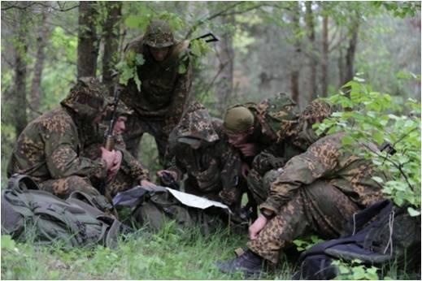
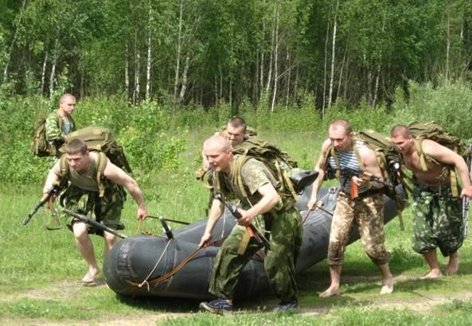

5 ноября – День военной разведки Вооруженных Сил Республики Беларусь
Ни для кого не секрет, что разведка является одним из старейших видов деятельности любого государства. Полководцы и военачальники всех времен активно ее использовали, чтобы встретить противника во всеоружии, отразить атаку и нанести неожиданный удар.

История нашей страны связана со становлением и развитием советского государства. Именно поэтому днем своего рождения военная разведка Вооруженных Сил Беларуси считает 5 ноября 1918 года, когда приказом Реввоенсовета в составе Полевого штаба Красной Армии было образовано Регистрационное управление — первый центральный разведывательный орган.
Военная разведка Беларуси заслуженно является правопреемницей славных традиций, боевого опыта и мастерства, приобретенных за годы Великой Отечественной войны, послевоенный период. Бесценный боевой опыт получен во время войны в Афганистане.
В рамках строительства Вооруженных Сил в 2001 году было создано главное разведывательное управление Генерального штаба, сформированы органы управления разведкой оперативно-стратегического и оперативного уровней, распределены функциональные задачи между ними.

На сегодняшний день большая работа проводится в области совершенствования системы управления разведкой. Продолжается плановое строительство и развитие системы радиоэлектронной разведки. В рамках повышения эффективности системы боевого дежурства усовершенствовано оборудование ПУРов соединения и воинских частей за счет современных технических средств сбора, обработки и отображения информации, автоматизации процессов соответствующей деятельности.
Одновременно осуществляется развитие оперативной и тактической разведки. Комплексный подход к обучению личного состава позволил продемонстрировать высокие результаты в ходе выполнения задач по предназначению подразделениями специальной и войсковой разведки при проведении учений и тренировок, участия в мероприятиях международного военного сотрудничества.
Завершены испытания современных технических средств разведки, созданных силами белорусского военно-промышленного комплекса, они приняты на вооружение и осуществляется их плановая закупка. Активно проводятся мероприятия по интеграции в нашу деятельность беспилотной авиации.

Как показывают результаты проведенных мероприятий оперативной и боевой подготовки, уровень готовности разведывательных подразделений к выполнению задач по предназначению постоянно растет.
Относительно новым направлением совершенствования добывающей подсистемы стало расширение сфер получения информации. Помимо традиционных, к ним можно отнести космическое пространство. Несмотря на то, что для Беларуси это самый «молодой» вид разведки, именно на его развитие сосредоточены значительные усилия, осуществляется планомерное наращивание возможностей имеющихся сил и средств.

Сегодня Республика Беларусь входит в число немногих государств, обладающих собственной орбитальной группировкой искусственных спутников Земли, обеспечивающей ведение обзорной космической разведки. Уже в среднесрочной перспективе после запуска нового космического аппарата сверхвысокого разрешения у нас появится возможность получения детальной информации, что выведет нашу страну на уровень ведущих в этой области государств планеты.
Но самое главное то, что в Вооруженных Силах Республики Беларусь есть специалисты, способные качественно и своевременно обрабатывать подобного рода сведения.

Отметим, что качественно и эффективно работает система подготовки военных разведчиков. В настоящее время она включает в себя факультет военной разведки Военной академии Республики Беларусь, где обучаются будущие офицеры войсковой, специальной и радиоэлектронной разведки, военные факультеты ряда вузов по подготовке младших специалистов.
На сегодняшний день военная разведка является важным элементом системы обеспечения национальной безопасности Республики Беларусь. Разведчики добывают и анализируют данные о состоянии военно-политической и стратегической обстановки, складывающейся вокруг нашего государства, прогнозируют ее развитие, выявляют на ранней стадии риски и вызовы, которые способны трансформироваться в реальные угрозы национальной безопасности. В этой связи на соединение и воинские части разведки возложен ряд специфических задач, которые выполняются личным составом в любых условиях обстановки и с высоким качеством.
